07 — Key Screens
Every screen, organized by what the user is trying to do.
29 screens across 10 feature areas.
7.1 — Welcome
A first impression that doesn't lecture.
Mascots and a hand-lettered logo set the tone in three seconds: this is going to be playful, low-stakes, and a little weird in the best way.
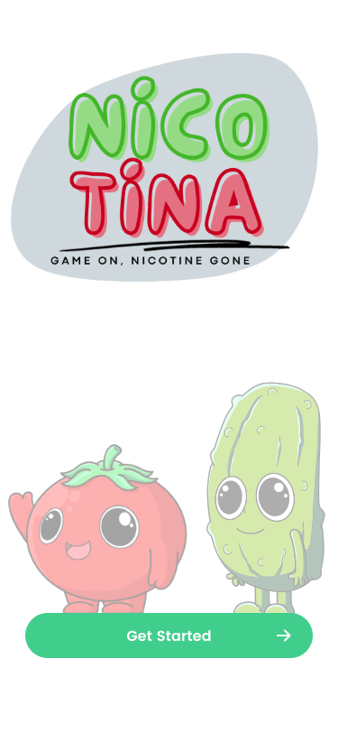
Splash
Hand-drawn logo + the two heroes say "this is a game" before any words do.

Get Started
Honest framing: "this app only works if you do 2 things." Sets expectations early — no false promises.

How to Play
A single page that explains the entire mechanic — red when you slip, blue when you replace.
7.2 — Authentication
Sign in, or skip the form altogether.
A "Continue as guest" path lowers the bar to entry — habit data first, account later. Error states stay friendly, never red-screen-of-death.

Sign in
Username/email + password, with "Continue as guest" right under the primary.

Sign up — empty
Four fields max. Social SSO at the bottom for the "I'll use Google" crowd.

Sign up — filled
CTA stays calmly disabled until validation passes. Inline helper text, no shouting.

Sign up — error
A worried cucumber softens the "Ooops!" — even the failure state is in-character.
7.3 — Personalization
Five questions, one avatar.
A short quiz tunes the entire experience: what you smoke, how often, your goal, your reminder cadence, and the veggie that'll keep you company.
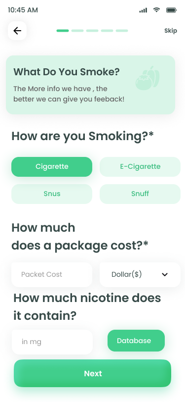
What you smoke
Pill-style multi-choice + cost + nicotine content from a database lookup.
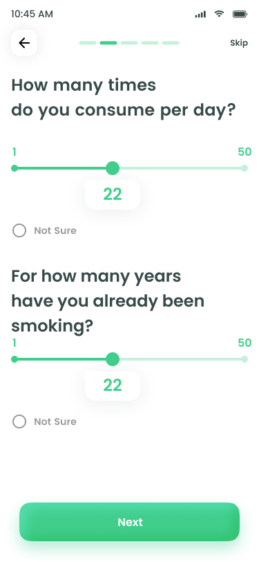
How often
Two stacked sliders + an honest "Not Sure" — no guilt for not knowing.
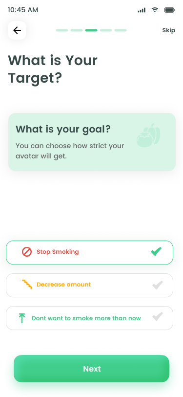
Your target
Stop · Decrease · Maintain. Three different games inside one app.
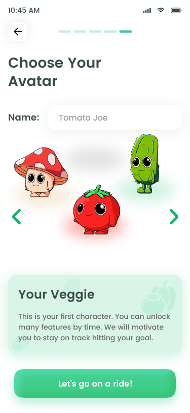
Choose your veggie
Three personalities to pick from — and you name them.
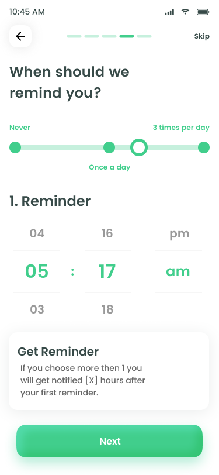
Reminder timing
Wheel-style time picker. "Never" is a valid answer — no dark patterns.
7.4 — Home Screen
Where the whole product earns its keep.
The home is the 30-second daily ritual: see your level, check the mood strip, press the big red or blue button, and move on with your day.
7.5 — Diary
Honest with yourself, one tap at a time.
A small, scrollable list of every day you logged — paired with a single feeling. No paragraph-writing required.
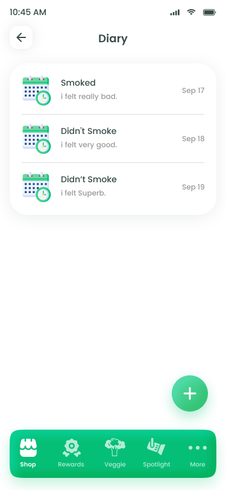
Diary
Each row tells a tiny story: "Smoked · I felt really bad" / "Didn't smoke · I felt superb."

Add entry
Calendar → Yes/No → 5 mood pills → optional note. Logging a day takes under 8 seconds.
7.6 — Progress & Reporting
Numbers that feel like a win.
Two surfaces: the bright-and-loud Levels view (XP, trophies, streak), and the quiet-and-deep Reporting view (calendar, money saved, mood trend).
Levels
Hexagons unlock left-to-right. Trophies sit in a quiet shelf below — present, but not nagging.
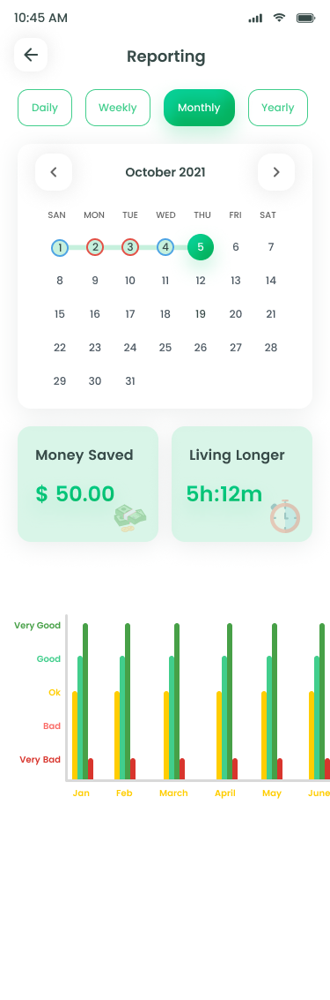
Reporting
Daily/Weekly/Monthly/Yearly tabs. Money saved + life regained sit right under the calendar.
7.7 — The Calculators
Make the cost visceral.
Two tools turn abstract numbers into something you can feel: time you'd win back, and the things that money becomes.
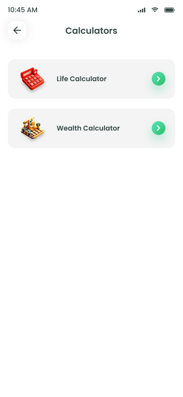
Hub
Two simple cards. No nested menus, no "advanced settings" hidden behind a gear.

Life Calculator
Slider-driven. Output: time won + money saved + nicotine avoided — three concrete numbers.

Wealth Calculator
A car. A vacation. A laptop. Pink cards = out of reach. Green = within reach.
7.8 — Habit Replacement
A new ritual, every day.
Behavioural science says quitting is easier when you replace, not just remove. A new card unlocks each day — small, doable, and finite.
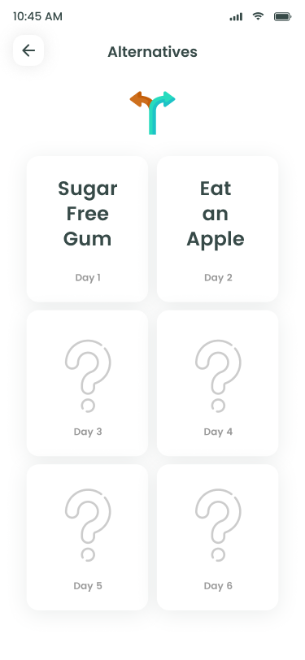
One alternative per day, locked ahead
"Day 1: Sugar Free Gum" → "Day 2: Eat an Apple". The ? cards build curiosity without overwhelming.
Tied to the daily check-in
Marking "I replaced" on the home screen is what unlocks the next day's card — the loop closes.
Curated, not generated
Suggestions come from a vetted list of 90+ research-backed substitutes — not an LLM hallucination.
7.9 — Reward Economy
A reason to come back tomorrow.
Stars and gems earned through daily check-ins buy cosmetic items for your veggie. No pay-to-progress, ever — premium items are clearly labelled "Subscriber only".
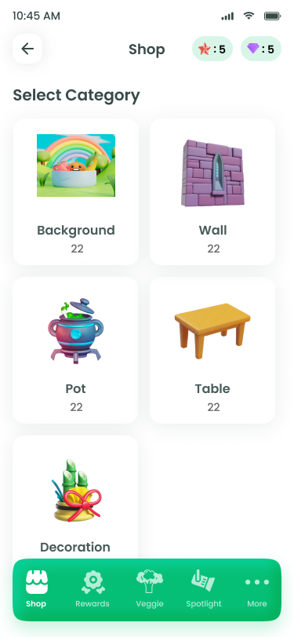
Shop · Categories
Background, Wall, Pot, Table, Decoration — your veggie has a whole apartment.
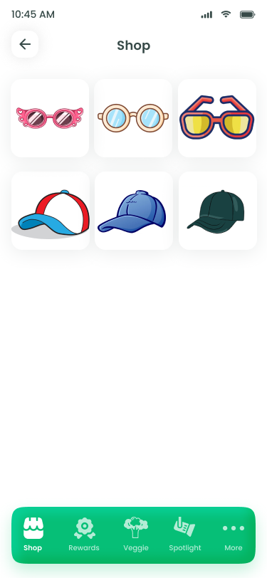
Shop · Accessories
Glasses and hats. Tiny dopamine, repeatable forever.
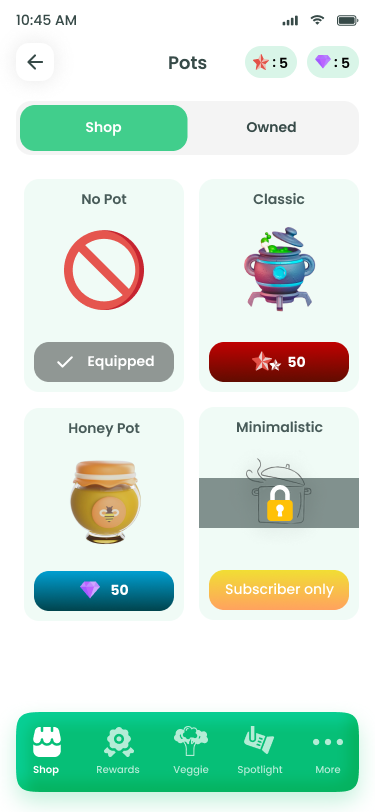
Items · Buy
Star-priced and gem-priced items side-by-side. "Subscriber only" is honest, not sneaky.
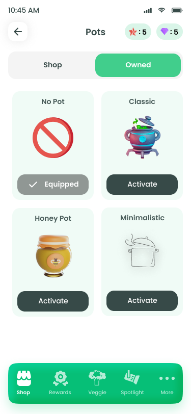
Owned · Equip
A separate tab so the act of "wearing" stays distinct from buying.
7.10 — Account & Community
The boring screens, designed with the same care.
Profile, Settings, Spotlight (community events) and Notifications. Familiar patterns — every list row has the same warmth as the rest of the app.
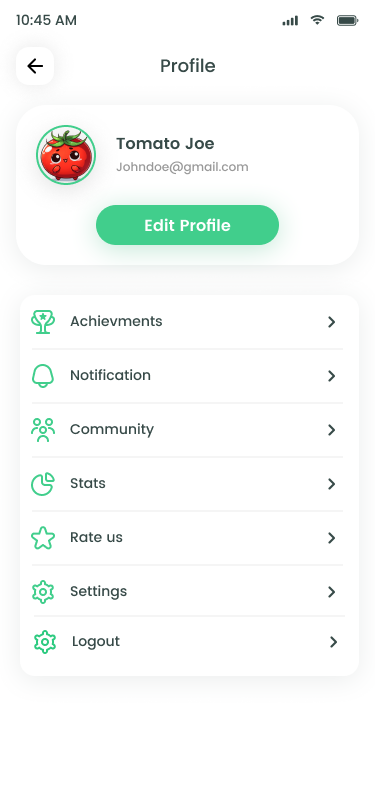
Profile
Your veggie up top, then a calm list — Achievements, Notifications, Community, Stats…
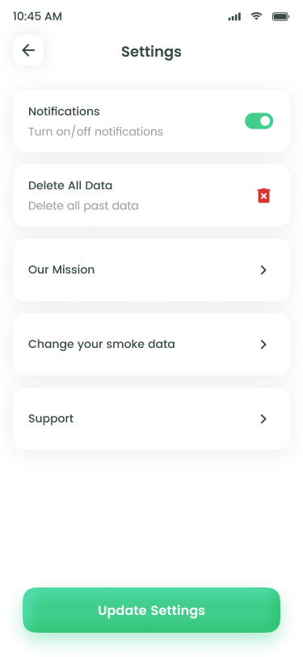
Settings
Five rows. The dangerous one ("Delete All Data") gets a coral icon — earning attention without alarming.
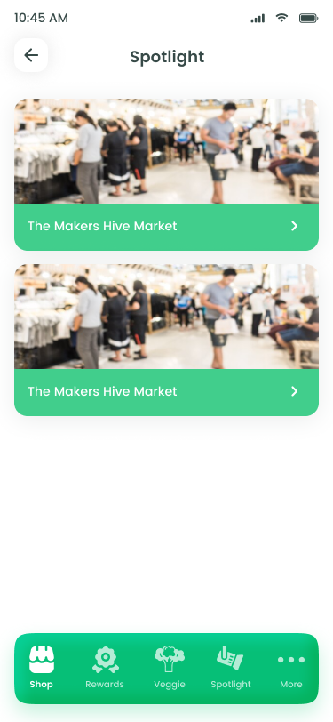
Spotlight
Community events, IRL meetups, and seasonal campaigns ("Nicotine-free February").
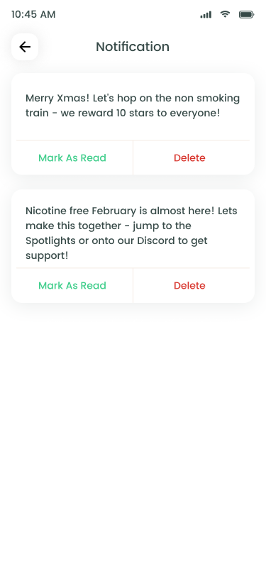
Notifications
Two clear actions per row — Mark as Read · Delete. No nested swipe gestures.